Documentary filmFilme documental
Laboratório de Arte-Educação
A documentary following an artistic residency at Sesc Guarulhos.Documentário que acompanha uma residência artística no Sesc Guarulhos.

ProcessProcesso
The film follows artists and educators in a shared process of creation, listening and experimentation.O filme acompanha artistas e educadores em um processo compartilhado de criação, escuta e experimentação.
Rather than documenting results, it attends to the conditions through which collective work takes shape.Em vez de documentar resultados, observa as condições pelas quais o trabalho coletivo toma forma.
DetailsDetalhes
MediaMídia


